CUT EXAMPLE PLOT OF PDF (used to be in Calculus section)
Contents
# load Python modules
import numpy as np
import pandas as pd
import seaborn as sns
import matplotlib.pyplot as plt
%config InlineBackend.figure_format = 'retina'
from plot_helpers import generate_pdf_panel
from plot_helpers import plot_pdf
from plot_helpers import plot_pdf_and_cdf
CUT EXAMPLE PLOT OF PDF (used to be in Calculus section)#
from scipy.stats import norm
# define normally distributed random variable with 𝜇=1000 and 𝜎=100
rvN = norm(1000, 100)
ns = np.linspace(0, 2000, 10000)
fNs = rvN.pdf(ns)
sns.lineplot(x=ns, y=fNs, label="Probability density function $f_N$")
---------------------------------------------------------------------------
TypeError Traceback (most recent call last)
Cell In[2], line 8
6 ns = np.linspace(0, 2000, 10000)
7 fNs = rvN.pdf(ns)
----> 8 sns.lineplot(x=ns, y=fNs, label="Probability density function $f_N$")
File /opt/hostedtoolcache/Python/3.8.15/x64/lib/python3.8/site-packages/seaborn/relational.py:645, in lineplot(data, x, y, hue, size, style, units, palette, hue_order, hue_norm, sizes, size_order, size_norm, dashes, markers, style_order, estimator, errorbar, n_boot, seed, orient, sort, err_style, err_kws, legend, ci, ax, **kwargs)
642 color = kwargs.pop("color", kwargs.pop("c", None))
643 kwargs["color"] = _default_color(ax.plot, hue, color, kwargs)
--> 645 p.plot(ax, kwargs)
646 return ax
File /opt/hostedtoolcache/Python/3.8.15/x64/lib/python3.8/site-packages/seaborn/relational.py:489, in _LinePlotter.plot(self, ax, kws)
486 if self.err_style == "band":
488 func = {"x": ax.fill_between, "y": ax.fill_betweenx}[orient]
--> 489 func(
490 sub_data[orient],
491 sub_data[f"{other}min"], sub_data[f"{other}max"],
492 color=line_color, **err_kws
493 )
495 elif self.err_style == "bars":
497 error_param = {
498 f"{other}err": (
499 sub_data[other] - sub_data[f"{other}min"],
500 sub_data[f"{other}max"] - sub_data[other],
501 )
502 }
File /opt/hostedtoolcache/Python/3.8.15/x64/lib/python3.8/site-packages/matplotlib/__init__.py:1423, in _preprocess_data.<locals>.inner(ax, data, *args, **kwargs)
1420 @functools.wraps(func)
1421 def inner(ax, *args, data=None, **kwargs):
1422 if data is None:
-> 1423 return func(ax, *map(sanitize_sequence, args), **kwargs)
1425 bound = new_sig.bind(ax, *args, **kwargs)
1426 auto_label = (bound.arguments.get(label_namer)
1427 or bound.kwargs.get(label_namer))
File /opt/hostedtoolcache/Python/3.8.15/x64/lib/python3.8/site-packages/matplotlib/axes/_axes.py:5367, in Axes.fill_between(self, x, y1, y2, where, interpolate, step, **kwargs)
5365 def fill_between(self, x, y1, y2=0, where=None, interpolate=False,
5366 step=None, **kwargs):
-> 5367 return self._fill_between_x_or_y(
5368 "x", x, y1, y2,
5369 where=where, interpolate=interpolate, step=step, **kwargs)
File /opt/hostedtoolcache/Python/3.8.15/x64/lib/python3.8/site-packages/matplotlib/axes/_axes.py:5272, in Axes._fill_between_x_or_y(self, ind_dir, ind, dep1, dep2, where, interpolate, step, **kwargs)
5268 kwargs["facecolor"] = \
5269 self._get_patches_for_fill.get_next_color()
5271 # Handle united data, such as dates
-> 5272 ind, dep1, dep2 = map(
5273 ma.masked_invalid, self._process_unit_info(
5274 [(ind_dir, ind), (dep_dir, dep1), (dep_dir, dep2)], kwargs))
5276 for name, array in [
5277 (ind_dir, ind), (f"{dep_dir}1", dep1), (f"{dep_dir}2", dep2)]:
5278 if array.ndim > 1:
File /opt/hostedtoolcache/Python/3.8.15/x64/lib/python3.8/site-packages/numpy/ma/core.py:2360, in masked_invalid(a, copy)
2332 def masked_invalid(a, copy=True):
2333 """
2334 Mask an array where invalid values occur (NaNs or infs).
2335
(...)
2357
2358 """
-> 2360 return masked_where(~(np.isfinite(getdata(a))), a, copy=copy)
TypeError: ufunc 'isfinite' not supported for the input types, and the inputs could not be safely coerced to any supported types according to the casting rule ''safe''
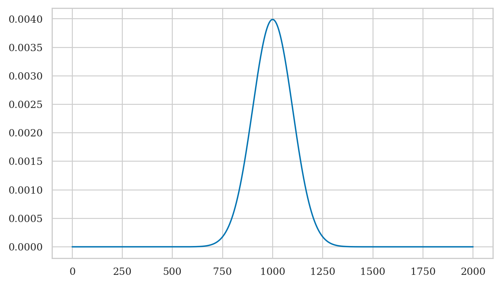
# import matplotlib.pyplot as plt
# filename = "figures/graph_of_pdf_of_rvN.pdf"
# with plt.rc_context({"figure.figsize":(7,3)}):
# x = np.linspace(0, 2000, 10000)
# fN = rvN.pdf(x)
# ax = sns.lineplot(x=x, y=fN)
# ax.figure.tight_layout()
# ax.set_title("Probability density function for the distribution $\mathcal{N}(1000,100)$")
# ax.set_xlabel('$x$')
# ax.set_ylabel('$f_N(x)$')
# ax.figure.savefig(filename, dpi=300, bbox_inches="tight", pad_inches=0)
N = 10 # number of samples
n = 30 # sample size
# generate N samples from (U_1,U_2,...,U_n)
usamples = {}
for i in range(0, N):
column_name = "sample" + str(i)
usamples[column_name] = rvU.rvs(n)
# usamples
In the last line we converted the dictionary usamples to a Pandas data frame usamples_df,
which will make plotting easier.
# convert usamples to a Pandas data frame
usamples_df = pd.DataFrame(usamples)
usamples_df.shape
# usamples_df
(30, 10)
To obtain a strip plot of all the samples,
we can simply call the Seaborn function stripplot on the data frame usamples_df.
# generate strip plot
ax = sns.stripplot(usamples_df, orient="h", palette="dark:b")
# add diamond-shaped marker to indicate mean in each sample
for i in range(0, N):
column_name = "sample" + str(i)
ubar_i = usamples_df[column_name].mean()
ax.scatter(ubar_i, i, marker="D", s=75, color="r")
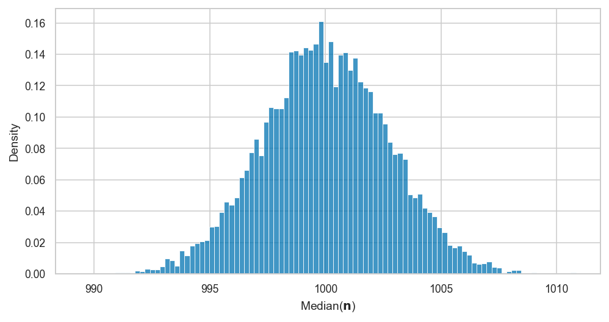
from scipy.stats import t as tdist
df = 7
rvT = tdist(df=73)
tbars = gen_sampling_dist(rvT, statfunc=mean, N=1000, n=30)
tbars[0:10]
[0.2546629162847764,
-0.052805898240538746,
0.10989680612229603,
-0.1252411111148421,
-0.30134098448585095,
0.18245499973804416,
-0.3919513998786795,
-0.21461552521963348,
-0.2140129421919345,
0.20552369335691717]
sns.histplot(tbars, color="r")
<AxesSubplot:ylabel='Count'>

sns.stripplot(x=tbars, marker="D", alpha=0.2, color="r")
<AxesSubplot:>

plot_sampling_dist(tbars)

Repeat S insights: for loop + histogram of obs from \(f_X\) from any r.v. allows you to see visualize any stats procedure
# demo t-dist
from scipy.stats import t as tdist
rvT = tdist(df=5)
tdata =rvT.rvs(1000)
sns.histplot(tdata, stat="density")
ts = np.linspace(-6,6,1000)
sns.lineplot(x=ts, y=rvT.pdf(ts), color="r")
<AxesSubplot:ylabel='Density'>

# Bonus: try playing with parameter n
from scipy.stats import norm
rvN = norm(1000,100)
def ecdf(data,b):
return sum(data <= b) / len(data)
n = 100 # CHANGE ME: what is eCDF when n=10? ; when n=1000?
ndata = rvN.rvs(n)
bs = np.linspace(600,1300)
empFbs = [ecdf(ndata,b) for b in bs]
sns.lineplot(x=bs, y=empFbs, drawstyle='steps-post')
sns.lineplot(x=bs, y=rvN.cdf(bs))
<AxesSubplot:>
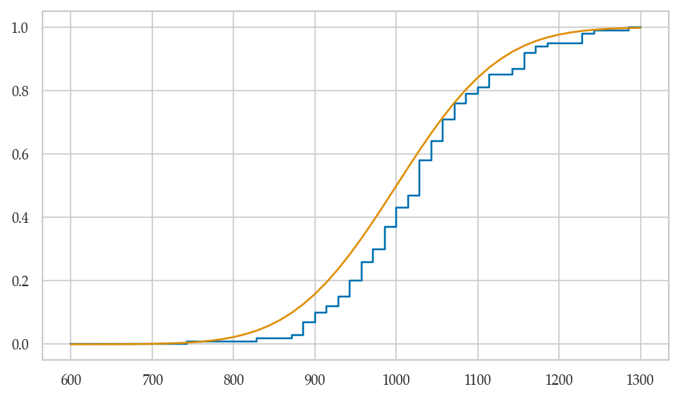
Example 2: generating observations from the geometric distribution#
Suppose we want to generate random observations from the geometrically distributed random variable \(G \sim \textrm{Geom}(p=0.2)\), which corresponds to the waiting time until first success in repeated sequence of Bernoulli trials, where each trials has probability \(p=0.2\) of success.
The function gen_g defined below is a generator of observations from the random variable \(G\).
from scipy.stats import geom
rvG = geom(p=0.2)
def gen_g(p):
u = random.random()
for k in range(1, 100):
if u <= rvG.cdf(k):
return k
To generate a random observation from \(B \sim \textrm{Bernoulli}(p=0.3)\),
we simply need to call the function gen_b with the keyword argument p=0.3.
gen_g(p=0.2)
2
Let’s now generates n=1000 observations from \(G \sim \textrm{Geom}(p=0.2)\).
n = 1000
gsample = [gen_g(p=0.2) for i in range(0,n)]
sns.histplot(gsample)
<AxesSubplot:ylabel='Count'>
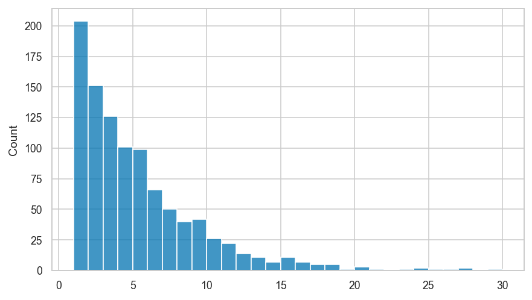
Annotations on plot#
import seaborn as sns
sns.set_style("whitegrid")
tips = sns.load_dataset("tips")
sat_mean = tips.loc[tips['day'] == 'Sat']['total_bill'].mean()
ax = sns.stripplot(x="day", y="total_bill", data=tips)
ax.annotate("Saturday\nMean",
xy=(2, sat_mean), xycoords='data',
xytext=(.1, .5), textcoords='axes fraction',
horizontalalignment="center",
arrowprops=dict(arrowstyle="->",
connectionstyle="arc3"),
bbox=dict(boxstyle="round", fc="w"),
)
Text(0.1, 0.5, 'Saturday\nMean')
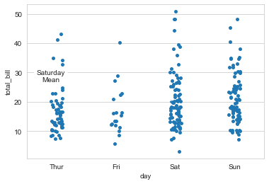
def variance(sample):
"""
Compute the sample variance of the values in `sample`.
"""
n = len(sample)
xbar = mean(sample)
sqdevs = [(x-xbar)**2 for x in sample]
return sum(sqdevs) / (n-1)
def get_sampling_dist(rv, statfunc, n, N=1000):
"""
Approximate the sampling distribution of the statistic `statfunc`
for i.i.d. random samples of size `n` from the random variable `rv`.
Draw `N` random samples and calculate `statfunc(sample)` for each.
"""
sampling_dist = []
for i in range(0, N):
sample = rv.rvs(n)
value = statfunc(sample)
sampling_dist.append(value)
return sampling_dist
Example 1: Samples from a uniform distribution#
from scipy.stats import uniform
# define a uniform random variable
rv1 = uniform(0, 1)
mu1 = rv1.mean() # 𝜇1 (mu)
sigma1 = rv1.std() # 𝜎1 (sigma)
# plot data from 30 samples of size 10
N = 30
n = 10
plt.xlim(-0.1, 1.1)
for i in range(0, N):
sample1 = rv1.rvs(n)
sns.stripplot(x=sample1)

Sampling distribution of the mean#
# compute the sampling distribution for samples of size n
mean_sdist_data1 = get_sampling_dist(rv1, mean, n, N=10000)
# plot a histogram of the sampling distribution
plt.xlim(-0.1, 1.1)
ax = sns.histplot(mean_sdist_data1, kde=False)
# stat="density"
ax.set(yticklabels=[])
_ = ax.set_title("Samping distribution of mean($\mathbf{X}$) for samples "
"of size $n$ = " + str(n) + ' from Uniform(0,1).')
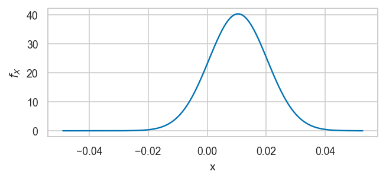
xbar_mu = np.mean(mean_sdist_data1)
xbar_std = np.std(mean_sdist_data1, ddof=1)
print("The sampling distribution has mean", round(xbar_mu,2),
"\nand the standard error is", round(xbar_std,5))
The sampling distribution has mean 0.5
and the standard error is 0.09145
# CLT prediction about standard error:
sigma1/np.sqrt(n)
0.09128709291752768
Example 2: Samples from a normal distribution#
from scipy.stats import norm
# define a normal random variable
mu2 = 1000 # 𝜇2 (mu)
sigma2 = 100 # 𝜎2 (sigma)
rv2 = norm(mu2, sigma2)
# plot data from 30 samples of size 10
N = 30
n = 10
plt.xlim(700,1300)
for i in range(0, N):
sample2 = rv2.rvs(n)
sns.stripplot(x=sample2)

Sampling distribution of the mean#
# compute the sampling distribution for samples of size n
mean_sdist_data2 = get_sampling_dist(rv2, mean, n, N=10000)
# plot a histogram of the sampling distribution
ax = sns.histplot(mean_sdist_data2, kde=False)
ax.set(yticklabels=[])
plt.xlim(700,1300)
_ = ax.set_title("Samping distribution of mean($\mathbf{X}$) for samples of size "
"$n$ = " + str(n) + ' from $\mathcal{N}('+ str(mu2) + ',' + str(sigma2) + ')$')

xbar_mu = np.mean(mean_sdist_data2)
xbar_std = np.std(mean_sdist_data2, ddof=1)
print("The sampling distribution has mean", round(xbar_mu,2),
"\nand the standard error is", round(xbar_std,2))
The sampling distribution has mean 1000.02
and the standard error is 31.47
# CLT prediction about standard error:
sigma2/np.sqrt(n)
31.622776601683793
from scipy.stats import t
fig, ax = plt.subplots()
# for df in [2,5,10,100]:
df = 5
rvT = t(df)
xmin, xmax = [-5,5]
xs = np.linspace(xmin, xmax, 1000)
fXs = rvT.pdf(xs)
# sns.lineplot(x=xs, y=fXs, ax=ax, linestyle='--', label="lkj")
ax = plot_pdf(rvT, xlims=[-5,5], ax=ax, label="$\\nu={}$".format(df), linestyle=":")
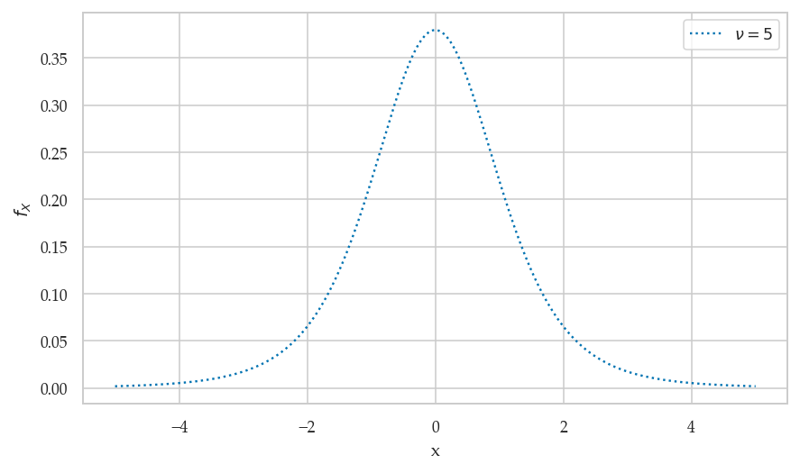
delta = 0.025
x = np.arange(-3.0, 3.0, delta)
y = np.arange(-2.0, 2.0, delta)
X, Y = np.meshgrid(x, y)
Z1 = np.exp(-X**2 - Y**2)
Z2 = np.exp(-(X - 1)**2 - (Y - 1)**2)
Z = (Z1 - Z2) * 2
fig, ax = plt.subplots(1, 1)
CS = ax.contour(X, Y, Z, 6, colors='k')
ax.clabel(CS, fontsize=9, inline=True)
ax.set_title('Default negative contours')
# # stats
# mean, var, skew, kurt = rvF.stats(moments='mvsk')
# mean, var, skew, kurt
Why do we need probability theory in statistics?#
Probability theory provides us with some essential tools needed for statistics:
modelling: describe a population as a probability distribution
sampling distributions: distributions obtained for random samples from a population
Additionally, artificially introduced randomness is the basis for two of the most important statistics “kung fu” techniques:
random selection = if you collect a sample of size n randomly selected from a population, then compute statistics from the sample, you can then make inferences about the whole population.
random assignment = create two roughly equivalent groups by randomly assigning participants into group A or group B. This random split is the basis for a statistical experiment that compares an intervention group and a control group. Given the participants were randomly assigned to the two groups, we can hope they are roughly equally distributed on all dimensions (similar distribution of all confounding variables), so that any differences observed between groups can be attributed to the intervention. Calculating the difference statistic intervention-control give an estimate of the effect size of this intervention.
CUT MATERIAL from 21_prob_theory.ipynb#
# load Python modules
import numpy as np
import pandas as pd
import seaborn as sns
import matplotlib.pyplot as plt
# Figures setup
sns.set_theme(
context="paper",
style="whitegrid",
palette="colorblind",
rc={'figure.figsize': (7,4)},
)
%config InlineBackend.figure_format = 'retina'
# # silence annoying warnings
# import warnings; warnings.filterwarnings('ignore')
# set random seed for repeatability
np.random.seed(42)
Computing prob integrals using quad#
Uniform#
def fU(u):
if 0 <= u and u <= 1:
return 1.0
else:
return 0.0
from scipy.integrate import quad
quad(fU, -10, 10)[0]
quad(fU, 0.2, 0.5)[0]
Normal#
mu = 1000
sigma = 100
def fN(n):
z = (n - mu)/sigma
C = sigma * np.sqrt(2*np.pi)
return 1 / C * np.exp(-1/2 * z**2)
quad(fN, 0, 2000)[0]
We’re using limits of integration 0 and 2000 because that function is practically zero outside this range, and function quad needs finite limits of integration to work properly.
quad(fN, 800, 900)[0]
Computing prob integrals using trapz#
from scipy.integrate import trapz
m = 1000
ns = np.linspace(800, 900, m)
fNs = fN(ns)
trapz(fNs, ns)
# how different
quad(fN, 800, 900)[0] - trapz(fNs, ns)
Using prob models#
# uniform distribution U(0,1)
from sympy import symbols, integrate, Integral, simplify
x, a, b = symbols('x a b')
fU = 1
simplify( integrate(fU, (x,a,b)) )
Integral(fU, x)
Integral(fU, x).doit()
Random process examples using Python (bonus material)#
Let’s look at some simple examples of two random events: a coin flip and a die roll.
We’ll use the Python module random to generate random numbers.
import random
random.random() # random number between 0 (inclusive) and 1 (non-inclusive)
Coin flip example#
The code example below shows a function that performs the equivalent of a coin flip.
def flip_coin():
r = random.random() # a number in the range [0,1)
if r < 0.5:
return "heads"
else:
return "tails"
flip_coin()
Flipping a coin many times#
Let’s see what happens if we flip the coin many times.
flips = [flip_coin() for _ in range(0, 2000)]
heads = [flip for flip in flips if flip == "heads"]
len(heads)/len(flips)
# plot a horizontal bar chart of the number of outcomes
s = pd.Series(flips)
print(s.value_counts().sort_index())
s.value_counts().sort_index().plot(kind="barh")
Six-sided die example#
def roll_die():
r = random.random()*6 # a number in the range [0,6)
rint = int(r) # convert to integer in {0,1,2,3,4,5}
value = rint + 1 # convert to integer in {1,2,3,4,5,6}
return value
roll_die()
Let’s see what happens if we roll the die many times.
rolls = [roll_die() for _ in range(0, 6000)]
ds = pd.Series(rolls)
print(ds.value_counts().sort_index())
ds.value_counts().sort_index().plot(kind="bar")
Example 3: Coin flip#
Consider the random variable \(C\) that describes the outcome of a coin flip for a balanced (fair) coin. The sample space for the random variable \(C\) is \(\{\texttt{heads}, \texttt{tails}\}\).
The probability mass function is $\( f_C(\texttt{heads}) = 0.5 \quad \textrm{and} \quad f_C(\texttt{tails}) = 0.5. \)$
# define the computer model `rvC` for the random variable C
from scipy.stats import randint
rvC = randint(0, 2)
# print the values of the probability mass function
for c in range(0,2):
print(c, rvC.pmf(c))
0 0.5
1 0.5
Example 4: Rolling a six-sided die#
The random outcome that occurs when we roll a six-sided die can be described as a random variable \(D\) which has the sample space \(\{1, 2, 3, 4, 5, 6\}\). If we assume the die is fair, then each of the outcomes will have equal weight, so the probability mass function \(f_D\) has the following values:
# define the computer model `rvD` for the random variable D
rvD = randint(1, 7)
# print the values of probability mass function
for d in range(1,7):
print(d, rvD.pmf(d))
1 0.16666666666666666
2 0.16666666666666666
3 0.16666666666666666
4 0.16666666666666666
5 0.16666666666666666
6 0.16666666666666666
Intentionally skipped#
rvN.moment(1) # = rvN.mean()
# Let's verify the formula:
# E[(x-𝜇)^2] = E[X^2] - E[X]^2
# second moment first moment squared
rvN.var() == rvN.moment(2) - rvN.moment(1)**2
from scipy.stats import norm
# 1. choose the parameters:
mean = 1000 # 𝜇 (mu) = where is its center?
std = 100 # 𝜎 (sigma) = how spread out is it?
# 2. create a normal random variable
rvN = norm(mean, std)
# 3. plot it's probability density function (pdf)
x = np.linspace(rvN.ppf(0.001), rvN.ppf(0.999), 10000)
y = rvN.pdf(x)
ax = sns.lineplot(x=x, y=y)
title = 'Probability density for the normal distribution $\mathcal{N}('+ str(mean) + ',' + str(std) + ')$'
ax.set_title(title)
ax.set_xlim(300,1700)
plt.xticks(np.arange(400,1700,100))
_ = ax.set_ylim(0, 0.006)
rvN.entropy()
0.5*np.log(2*np.pi*sigma**2) + 0.5
EARLY ATTEMPTS AT EXPECTATIONS CALCULATIONS#
from sympy import Rational
integrate( (u-Rational(1,2))**2, (u,0,1) )
from scipy.stats import uniform
xs = np.linspace(0, 1, 1000)
rvU = uniform(0, 1)
from scipy.integrate import trapz
# mean
y1 = xs*rvU.pdf(xs)
mu = trapz(y1, xs)
mu
# variance
y2 = (xs-mu)**2 * rvU.pdf(xs)
sigma2 = trapz(y2, xs)
sigma2
rvU.var()
Alt#
from scipy.stats import uniform
rvU = uniform(0, 1)
def xpU(x):
return x*rvU.pdf(x)
quad(xpU, 0, 1)[0]
def xpU(x):
muX = rvU.mean()
return x*rvU.pdf(x)
quad(xpU, 0, 1)[0]
from scipy.integrate import simpson
xs = np.linspace(0, 1, 1000)
rvU = uniform(0, 1)
simpson(xs*rvU.pdf(xs), xs)
Example probability calculation#
What is the probability of observing a value between 800 and 900.
from plot_helpers import calc_prob_and_plot
from scipy.stats import norm
rvN = norm(1000, 100)
from scipy.integrate import quad
# Pr(800 < X < 900) = integral of f_X between 800 and 900
quad(rvN.pdf, 800, 900)[0]
calc_prob_and_plot(rvN, 600, 1000)
# what type of object is rvH?
type(rvH)
The above line tells us some information about the internal implementation of the Python object rvH,
which is the Python implementation of the random variable \(H \sim \textrm{Pois}(20)\).
The rvH object is an instance of the class rv_frozen (frozen random variable).
Ignore the frozen part. The key part is that it’s a random variable.
Beta function#
from scipy.special import beta as betaf
betaf(1,1)
betaf(2,1)
betaf(3,2)
# # Graph of betaf
# x = np.linspace(0.05, 5, 100)
# y = np.linspace(0.05, 5, 100)
# X, Y = np.meshgrid(x, y)
# Z = betaf(X, Y)
# # Controur plot
# # plt.contour(X, Y, Z)
# # 3D surface plot
# fig = plt.figure(figsize=(6,6))
# ax = fig.add_subplot(111, projection='3d')
# ax.plot_surface(X, Y, Z)
Kombucha-temperature dependence#
Kombuncha production dataset story#
Let’s say have collected the data from the kombucha bottling plant from past month. You have a sample of \(m=1000\) observations of two variables:
t: the temperature in Cn: the volume of kombucha that went into the bottle
You have a suspicion that the bottling temperature might be causing a variation in the volume.
You want to use “data science” to check if a relationship between \(t\) and \(n\) exists, and if it exists you want to use it to your advantage to improve the reliability of the kombucha bottling process.
Recall that your distributor only pays for bottles that are within “spec” (mean of 1000 +/- 2 times std = \([800,1200]\)), and the current bottling process only produces “up to spec” bottles only … percent of the time.
If there is a relationship between temperature t and bottled volume n then we should be able to find it if we collect lots of (t,n) data observations from the bottling process.
from scipy.stats import norm
m = 700
# temperature is normally distrubted around 20 with std 2
rvT = norm(20,2)
ts = rvT.rvs(m)
# kombucha volume normally distr
meanN = 1000 + (ts-rvT.mean())*35
sigmaN = 75
rvN = norm(meanN, sigmaN)
ns = rvN.rvs(m)
# sns.displot(x=ns, y=ts)
kprod = pd.DataFrame({"t":ts, "n":ns})
sns.displot(data=kprod, x="n", y="t")
<seaborn.axisgrid.FacetGrid at 0x13419f9d0>

# check data
# ns.shape
# kprod["t"]
# kprod["n"] # came from the numpy array `ns`
kprod["n"].std()
100.7280828876444
kprod["n"].mean()
1005.0907538677609
# # save data to kprod.csv
# kprod.to_csv("../datasets/kprod.csv")
kprod = pd.read_csv("../datasets/kprod.csv")
kprod
| Unnamed: 0 | t | n | |
|---|---|---|---|
| 0 | 0 | 20.993428 | 995.565764 |
| 1 | 1 | 19.723471 | 1068.997191 |
| 2 | 2 | 21.295377 | 992.512421 |
| 3 | 3 | 23.046060 | 1000.977493 |
| 4 | 4 | 19.531693 | 866.862076 |
| ... | ... | ... | ... |
| 695 | 695 | 19.380907 | 992.182772 |
| 696 | 696 | 20.652266 | 921.794840 |
| 697 | 697 | 17.497773 | 839.550997 |
| 698 | 698 | 21.848054 | 1154.712934 |
| 699 | 699 | 19.630196 | 937.789780 |
700 rows × 3 columns
kprod.describe()
| Unnamed: 0 | t | n | |
|---|---|---|---|
| count | 700.00000 | 700.000000 | 700.000000 |
| mean | 349.50000 | 19.983708 | 1005.090754 |
| std | 202.21688 | 1.971220 | 100.728083 |
| min | 0.00000 | 13.517465 | 619.673850 |
| 25% | 174.75000 | 18.610773 | 937.563085 |
| 50% | 349.50000 | 19.997141 | 1002.065427 |
| 75% | 524.25000 | 21.266132 | 1073.863544 |
| max | 699.00000 | 27.705463 | 1431.935309 |
Plots inspired by seaborn docs#
# penguins = sns.load_dataset("penguins")
sns.displot(data=kprod, x="n", y="t")
<seaborn.axisgrid.FacetGrid at 0x1343d1880>

sns.displot(data=kprod, x="n", y="t", kind="kde")
<seaborn.axisgrid.FacetGrid at 0x13442b100>

# # ALT 1. fewer levels
# sns.displot(data=kprod, x="n", y="t", kind="kde", thresh=.2, levels=4)
# # ALT 2. specific levels
# sns.displot(data=kprod, x="n", y="t", kind="kde", levels=[.01, .05, .1, .8])
sns.jointplot(data=kprod, x="n", y="t", kind="kde")
<seaborn.axisgrid.JointGrid at 0x134285730>
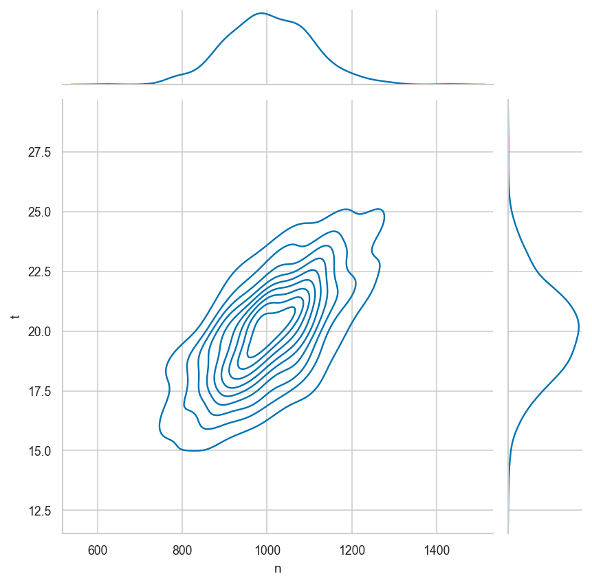
g = sns.JointGrid(data=kprod, x="n", y="t")
g.plot_joint(sns.histplot)
g.plot_marginals(sns.boxplot)
<seaborn.axisgrid.JointGrid at 0x134590820>

sns.displot(data=kprod, x="n", y="t", kind="kde",
rug=True, rug_kws={"alpha":0.2})
<seaborn.axisgrid.FacetGrid at 0x133d27850>
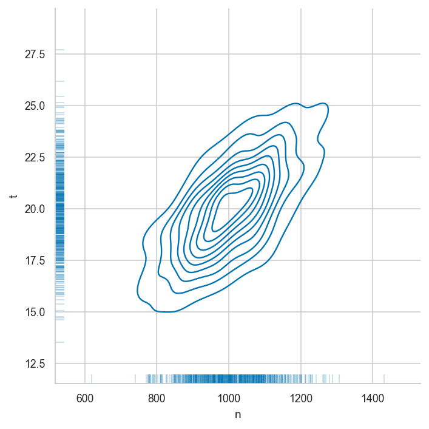
Other 3D and surface plot examples#
# via https://matplotlib.org/stable/gallery/mplot3d/polys3d.html
from matplotlib.collections import PolyCollection
import matplotlib.pyplot as plt
import numpy as np
from scipy.stats import poisson
# Fixing random state for reproducibility
np.random.seed(19680801)
def polygon_under_graph(x, y):
"""
Construct the vertex list which defines the polygon filling the space under
the (x, y) line graph. This assumes x is in ascending order.
"""
return [(x[0], 0.), *zip(x, y), (x[-1], 0.)]
ax = plt.figure().add_subplot(projection='3d')
x = np.linspace(0., 10., 31)
lambdas = range(1, 9)
# verts[i] is a list of (x, y) pairs defining polygon i.
verts = [polygon_under_graph(x, poisson.pmf(l, x)) for l in lambdas]
facecolors = plt.colormaps['viridis_r'](np.linspace(0, 1, len(verts)))
poly = PolyCollection(verts, facecolors=facecolors, alpha=.7)
ax.add_collection3d(poly, zs=lambdas, zdir='y')
ax.set(xlim=(0, 10), ylim=(1, 9), zlim=(0, 0.35),
xlabel='x', ylabel=r'$\lambda$', zlabel='probability')
plt.show()
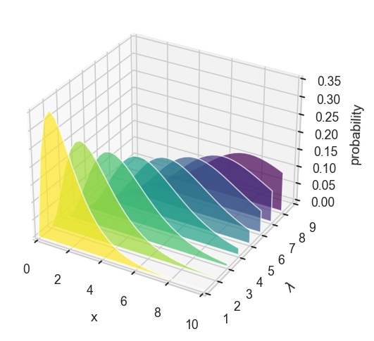
# verts[0]
# via https://problemsolvingwithpython.com/06-Plotting-with-Matplotlib/06.16-3D-Surface-Plots/
import numpy as np
import matplotlib.pyplot as plt
from mpl_toolkits.mplot3d import axes3d
# if using a Jupyter notebook, include:
%matplotlib inline
fig = plt.figure(figsize=(12,6))
ax1 = fig.add_subplot(121, projection='3d')
ax2 = fig.add_subplot(122, projection='3d')
x = np.arange(-5,5,0.1)
y = np.arange(-5,5,0.1)
X,Y = np.meshgrid(x,y)
Z = X*np.exp(-X**2 - Y**2)
# Plot a basic wireframe
ax1.plot_wireframe(X, Y, Z, rstride=10, cstride=10)
ax1.set_title('row step size 10, column step size 10')
ax2.plot_wireframe(X, Y, Z, rstride=20, cstride=20)
ax2.set_title('row step size 20, column step size 20')
plt.show()

# via https://problemsolvingwithpython.com/06-Plotting-with-Matplotlib/06.14-Contour-Plots/
import numpy as np
import matplotlib.pyplot as plt
# if using a Jupyter notebook, include:
%matplotlib inline
x = np.arange(0, 10.0, 0.01)
y = np.arange(0, 10.0, 0.01)
X, Y = np.meshgrid(x, y)
Z = np.sin(X)*np.cos(Y)
fig, ax = plt.subplots(figsize=(6,6))
# ax.contourf(X,Y,Z)
ax.contour(X,Y,Z)
plt.show()

# via https://stackoverflow.com/questions/16024677/generate-correlated-data-in-python-3-3
import numpy as np
import matplotlib.pyplot as plt
num_samples = 400
# The desired mean values of the sample.
mu = np.array([5.0, 0.0, 10.0])
# The desired covariance matrix.
r = np.array([
[ 3.40, -2.75, -2.00],
[ -2.75, 5.50, 1.50],
[ -2.00, 1.50, 1.25]
])
# Generate the random samples.
rng = np.random.default_rng()
y = rng.multivariate_normal(mu, r, size=num_samples)
# Plot various projections of the samples.
plt.subplot(2,2,1)
plt.plot(y[:,0], y[:,1], 'b.', alpha=0.25)
plt.plot(mu[0], mu[1], 'ro', ms=3.5)
plt.ylabel('y[1]')
plt.axis('equal')
plt.grid(True)
plt.subplot(2,2,3)
plt.plot(y[:,0], y[:,2], 'b.', alpha=0.25)
plt.plot(mu[0], mu[2], 'ro', ms=3.5)
plt.xlabel('y[0]')
plt.ylabel('y[2]')
plt.axis('equal')
plt.grid(True)
plt.subplot(2,2,4)
plt.plot(y[:,1], y[:,2], 'b.', alpha=0.25)
plt.plot(mu[1], mu[2], 'ro', ms=3.5)
plt.xlabel('y[1]')
plt.axis('equal')
plt.grid(True)
plt.show()
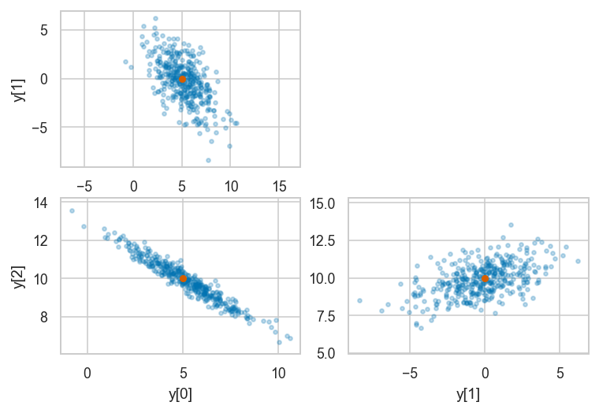
import numpy as np
import matplotlib.pyplot as plt
linalg = np.linalg
np.random.seed(1)
num_samples = 1000
num_variables = 2
cov = [[0.3, 0.2], [0.2, 0.2]]
L = linalg.cholesky(cov)
# print(L.shape)
# (2, 2)
uncorrelated = np.random.standard_normal((num_variables, num_samples))
mean = [1, 1]
correlated = np.dot(L, uncorrelated) + np.array(mean).reshape(2, 1)
# print(correlated.shape)
# (2, 1000)
plt.scatter(correlated[0, :], correlated[1, :], c='green')
plt.show()

# via https://stackoverflow.com/questions/16024677/generate-correlated-data-in-python-3-3
import numpy as np
import matplotlib.pyplot as plt
import scipy.stats as stats
linalg = np.linalg
np.random.seed(1)
num_samples = 1000
num_variables = 2
cov = [[1.0, 0.2], [0.2, 1.0]]
L = linalg.cholesky(cov)
rhos = []
for i in range(1000):
uncorrelated = np.random.standard_normal((num_variables, num_samples))
correlated = np.dot(L, uncorrelated)
X, Y = correlated
rho, pval = stats.pearsonr(X, Y)
rhos.append(rho)
plt.hist(rhos)
plt.show()

# via https://stackoverflow.com/questions/38698277/plot-normal-distribution-in-3d
import numpy as np
import matplotlib.pyplot as plt
from scipy.stats import multivariate_normal
from mpl_toolkits.mplot3d import Axes3D
#Parameters to set
mu_x = 0
variance_x = 3
mu_y = 0
variance_y = 15
#Create grid and multivariate normal
x = np.linspace(-10,10,500)
y = np.linspace(-10,10,500)
X, Y = np.meshgrid(x,y)
pos = np.empty(X.shape + (2,))
pos[:, :, 0] = X
pos[:, :, 1] = Y
rv = multivariate_normal([mu_x, mu_y], [[variance_x, 0], [0, variance_y]])
#Make a 3D plot
fig = plt.figure()
ax = plt.axes(projection='3d')
ax.plot_surface(X, Y, rv.pdf(pos), cmap='Greys', linewidth=0)
ax.set_xlabel('X axis')
ax.set_ylabel('Y axis')
ax.set_zlabel('$p_{XY}$ axis')
plt.show()

pos.shape
(500, 500, 2)
rv.pdf(pos).shape
(500, 500)
#https://docs.scipy.org/doc/scipy/reference/generated/scipy.stats.multivariate_normal.html#scipy.stats.multivariate_normal
from scipy.stats import multivariate_normal
x = np.linspace(0, 5, 10, endpoint=False)
y = multivariate_normal.pdf(x, mean=2.5, cov=0.5)
fig1 = plt.figure()
ax = fig1.add_subplot(111)
ax.plot(x, y)
[<matplotlib.lines.Line2D at 0x134b43730>]

x, y = np.mgrid[-1:1:.01, -1:1:.01]
pos = np.dstack((x, y))
mu = [0.5, -0.2]
Sigma = [[2.0, 0.7], [0.7, 0.5]]
rv = multivariate_normal(mu, Sigma)
fig2 = plt.figure()
ax2 = fig2.add_subplot(111)
ax2.contourf(x, y, rv.pdf(pos))
<matplotlib.contour.QuadContourSet at 0x134265700>

rv.pdf(pos)
array([[0.10948266, 0.11064805, 0.11178199, ..., 0.00045415, 0.00042486,
0.0003973 ],
[0.10988591, 0.11107083, 0.11222452, ..., 0.00046831, 0.00043817,
0.00040981],
[0.11027983, 0.11148431, 0.11265774, ..., 0.00048287, 0.00045186,
0.00042267],
...,
[0.03403147, 0.03533639, 0.03667695, ..., 0.02904694, 0.02791839,
0.02682317],
[0.03350345, 0.0347929 , 0.0361178 , ..., 0.02938003, 0.02824242,
0.02713821],
[0.03298039, 0.03425441, 0.03556368, ..., 0.02971402, 0.0285674 ,
0.02745425]])
sns.histplot(x=x[0], y=y[0])
<AxesSubplot:>
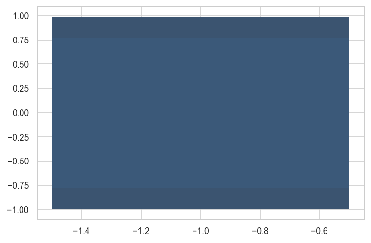
# via http://cxhernandez.com/tutorials/dataviz/2014/11/19/jointplot-d3.html
from matplotlib import pyplot as plt
from matplotlib import gridspec
def gen_cov(n):
A = np.random.rand(n, n)
return np.dot(A, A.T)
n = 2
m = 2
mu = list(map(lambda x: np.random.normal(size = x)*np.random.randint(1,11) + np.random.normal(size = x), n*[m]))
sigma = list(map(gen_cov, n*[m]))
N = 500
data = np.vstack(
list(
map(
lambda i: np.random.multivariate_normal(mu[i], sigma[i], N),
range(n)
)
)
).T
xmin, ymin = data.min(axis=1)
xmax, ymax = data.max(axis=1)
xmax, xmin = tuple(np.array([xmax, xmin]) + 0.25*(xmax - xmin)*np.array([1, -1]))
ymax, ymin = tuple(np.array([ymax, ymin]) + 0.25*(ymax - ymin)*np.array([1, -1]))
#Define grid for subplots
gs = gridspec.GridSpec(2, 2, width_ratios=[3, 1], height_ratios = [1, 4])
#Create scatter plot
fig = plt.figure()
ax = plt.subplot(gs[1, 0])
cax = ax.scatter(data[0], data[1], color='darkred', alpha=.4)
#Turn off all axes
_=ax.axis('off')
#Create Y-marginal (right)
axr = plt.subplot(gs[1, 1], sharey=ax, xticks=[], yticks=[],frameon = False, xlim=(0, 1), ylim = (ymin, ymax))
axr.hist(data[1], color = '#5673E0', orientation = 'horizontal', density = True)
#Create X-marginal (top)
axt = plt.subplot(gs[0,0], sharex=ax,frameon = False, xticks = [], yticks = [], xlim = (xmin, xmax), ylim=(0, 1))
axt.hist(data[0], color = '#5673E0', density = True)
#Bring the marginals closer to the scatter plot
fig.tight_layout(pad = 1)

from matplotlib import cm
from scipy.stats import gaussian_kde
#KDE for top marginal
kde_X = gaussian_kde(data[0])
#KDE for right marginal
kde_Y = gaussian_kde(data[1])
#KDE for contour plot
kde_XY = gaussian_kde(data)
# Create two 1D grid with 100 points in each dimension
x = np.linspace(xmin, xmax, 100)
y = np.linspace(ymin, ymax, 100)
# Create a regular 2D grid with 100 points in each dimension
xi, yi = np.mgrid[xmin:xmax:100j, ymin:ymax:100j]
coords = np.vstack([item.ravel() for item in [xi, yi]])
# Evaluate the KDEs on a 1D grid
dx = kde_X(x) # X-marginal density
dy = kde_Y(y) # Y-marginal density
# Evaluate the KDE on a 2D grid
density = kde_XY(coords).reshape(xi.shape) # Bivariate density
#Set style to white
sns.set_style('white')
#Define grid for subplots
gs = gridspec.GridSpec(2, 2, width_ratios=[3, 1], height_ratios=[1, 4])
#Create contour plot
fig = plt.figure()
ax = plt.subplot(gs[1,0])
# Filled Contour
cax = ax.contourf(density.T, origin = 'lower',
extent = (xmin, xmax, ymin, ymax),
cmap = "Greys") #coolwarm)
# Contour Lines
ax.contour(density.T, origin = 'lower',
extent = (xmin, xmax, ymin, ymax),
cmap = cm.bone)
# cbar = fig.colorbar(cax, location="bottom", panchor=(0,0), pad=0)
#Turn off all axes
ax.axis('off')
#Create Y-marginal (right)
axr = plt.subplot(gs[1,1], sharey = ax, xticks = [], yticks = [], frameon = False, xlim = (0, 1.4*dy.max()), ylim=(ymin, ymax))
axr.plot(dy, y, color = 'black')
axr.fill_betweenx(y, 0, dy, alpha = .75, color = 'gray')
#Create X-marginal (top)
axt = plt.subplot(gs[0,0], sharex = ax, frameon = False, xticks=[], yticks=[], xlim = (xmin, xmax), ylim=(0, 1.4*dx.max()))
axt.plot(x, dx, color = 'black')
axt.fill_between(x, 0, dx, alpha=.75, color = 'gray')
#Bring the marginals closer to the contour plot
fig.tight_layout(pad = 1)

Coin tosses for n=100, n=1000, and n=10000#
import numpy as np
np.random.seed(15)
import pandas as pd
import matplotlib.pyplot as plt
from scipy.stats import randint
rvC = randint(0, 2)
filename = "figures/panel_n_coin_flips.pdf"
with plt.rc_context({"figure.figsize":(12,3)}):
fig, axs = plt.subplots(1, 3)
ax1, ax2, ax3 = axs
n = 100
flips = rvC.rvs(n)
s = pd.Series(flips).replace(1, "heads").replace(0, "tails")
# print(f"Case {n=}")
# print(s.value_counts().sort_index())
s.value_counts().sort_index().plot(kind="bar", rot=0, ax=ax1)
title1 = f"(a) Case $n={n}$"
ax1.set_title(title1, y=0, pad=-30)
sns.despine(top=True, right=True, ax=ax1)
n = 1000
flips = rvC.rvs(n)
s = pd.Series(flips).replace(1, "heads").replace(0, "tails")
# print(f"Case {n=}")
# print(s.value_counts().sort_index())
s.value_counts().sort_index().plot(kind="bar", rot=0, ax=ax2)
title2 = f"(b) Case $n={n}$"
ax2.set_title(title2, y=0, pad=-30)
sns.despine(top=True, right=True, ax=ax2)
n = 10000
flips = rvC.rvs(n)
s = pd.Series(flips).replace(1, "heads").replace(0, "tails")
# print(f"Case {n=}")
# print(s.value_counts().sort_index())
s.value_counts().sort_index().plot(kind="bar", rot=0, ax=ax3)
title3 = f"(c) Case $n={n}$"
ax3.set_title(title3, y=0, pad=-30)
sns.despine(top=True, right=True, ax=ax3)
fig.tight_layout()
fig.savefig(filename, dpi=300, bbox_inches="tight", pad_inches=0)

Dice rolls 600 6000 60000#
import numpy as np
np.random.seed(5)
import pandas as pd
import matplotlib.pyplot as plt
from scipy.stats import randint
rvD = randint(1, 7)
filename = "figures/panel_n_dice_rolls.pdf"
with plt.rc_context({"figure.figsize":(12,3)}):
fig, axs = plt.subplots(1, 3)
ax1, ax2, ax3 = axs
n = 600
rolls = rvD.rvs(n)
ds = pd.Series(rolls)
# print(f"Case {n=}")
# print(ds.value_counts().sort_index())
ds.value_counts().sort_index().plot(kind="bar", ax=ax1)
title1 = f"(a) Case $n={n}$"
ax1.set_title(title1, y=0, pad=-30)
sns.despine(top=True, right=True, ax=ax1)
n = 6000
rolls = rvD.rvs(n)
ds = pd.Series(rolls)
# print(f"Case {n=}")
# print(ds.value_counts().sort_index())
ds.value_counts().sort_index().plot(kind="bar", ax=ax2)
title2 = f"(b) Case $n={n}$"
ax2.set_title(title2, y=0, pad=-30)
sns.despine(top=True, right=True, ax=ax2)
n = 60000
rolls = rvD.rvs(n)
ds = pd.Series(rolls)
# print(f"Case {n=}")
# print(ds.value_counts().sort_index())
ds.value_counts().sort_index().plot(kind="bar", ax=ax3)
title3 = f"(c) Case $n={n}$"
ax3.set_title(title3, y=0, pad=-30)
sns.despine(top=True, right=True, ax=ax3)
fig.tight_layout()
fig.savefig(filename, dpi=300, bbox_inches="tight", pad_inches=0)

POC using X^2 + Y^2#
from matplotlib import gridspec
xmin = 0
xmax = 2000
ymin = 0
ymax = 20
# Create two 1D grid with 100 points in each dimension
x = np.linspace(xmin, xmax, 100)
y = np.linspace(ymin, ymax, 100)
X, Y = np.meshgrid(x,y)
Z = X**2 + 1000*Y**2
#Create contour plot
gs = gridspec.GridSpec(2, 2, width_ratios=[3, 1], height_ratios=[1, 4])
fig = plt.figure()
ax = plt.subplot(gs[1,0])
# Filled Contour
cax = ax.contourf(Z, origin = 'lower',
extent = (xmin, xmax, ymin, ymax),
cmap = "Greys")
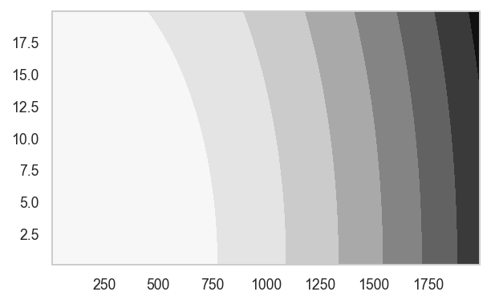
# # ALT1: generate N data points using rvs(N)
# N = 10000
# dfXY = pd.DataFrame(rvXY.rvs(N), columns=["x","y"])
# # controur plot
# sns.jointplot(data=dfXY, x="x", y="y",
# kind="kde")
# # countourf plot
# sns.kdeplot(data=dfXY, x="x", y="y",
# shade=True, shade_lowest=False)
a = np.array((1,2,3))
b = np.array((2,3,4))
np.dstack((a,b))
np.dstack((a,b)).shape
(1, 3, 2)
x, y = np.mgrid[-1:1:.01, -1:1:.01]
pos = np.dstack((x, y))
pos.shape
(200, 200, 2)
# evaluate for a point (x,y)
rvXY.pdf((1000,10))
0.0006784909393334893
# evaluate for a list of points (x,y)
XY = np.array(
[
[1000, 10],
[1010, 11],
[ 995, 9],
]
)
XY
rvXY.pdf(XY)
array([0.00067849, 0.00049852, 0.00048538])
# evaluate over an meshgrid of points
xmin = 0
xmax = 2000
ymin = 0
ymax = 20
xs = np.linspace(xmin, xmax, 5)
ys = np.linspace(ymin, ymax, 3)
X, Y = np.meshgrid(xs, ys)
pos = np.empty(X.shape + (2,))
pos[:, :, 0] = X
pos[:, :, 1] = Y
print("pos.shape", pos.shape)
pos.shape (3, 5, 2)
# pos
# print("rvXY.pdf(pos).shape", rvXY.pdf(pos).shape)
# rvXY.pdf(pos)
Coin tosses for n=100, n=1000, and n=10000#
import numpy as np
np.random.seed(15)
import pandas as pd
import matplotlib.pyplot as plt
from scipy.stats import randint
rvC = randint(0, 2)
filename = "figures/panel_n_coin_flips.pdf"
with plt.rc_context({"figure.figsize":(12,3)}):
fig, axs = plt.subplots(1, 3)
ax1, ax2, ax3 = axs
n = 100
flips = rvC.rvs(n)
s = pd.Series(flips).replace(1, "heads").replace(0, "tails")
# print(f"Case {n=}")
# print(s.value_counts().sort_index())
s.value_counts().sort_index().plot(kind="bar", rot=0, ax=ax1)
title1 = f"(a) Case $n={n}$"
ax1.set_title(title1, y=0, pad=-30)
sns.despine(top=True, right=True, ax=ax1)
n = 1000
flips = rvC.rvs(n)
s = pd.Series(flips).replace(1, "heads").replace(0, "tails")
# print(f"Case {n=}")
# print(s.value_counts().sort_index())
s.value_counts().sort_index().plot(kind="bar", rot=0, ax=ax2)
title2 = f"(b) Case $n={n}$"
ax2.set_title(title2, y=0, pad=-30)
sns.despine(top=True, right=True, ax=ax2)
n = 10000
flips = rvC.rvs(n)
s = pd.Series(flips).replace(1, "heads").replace(0, "tails")
# print(f"Case {n=}")
# print(s.value_counts().sort_index())
s.value_counts().sort_index().plot(kind="bar", rot=0, ax=ax3)
title3 = f"(c) Case $n={n}$"
ax3.set_title(title3, y=0, pad=-30)
sns.despine(top=True, right=True, ax=ax3)
fig.tight_layout()
fig.savefig(filename, dpi=300, bbox_inches="tight", pad_inches=0)
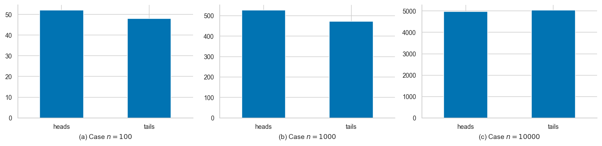
Dice rolls 600 6000 60000#
import numpy as np
np.random.seed(5)
import pandas as pd
import matplotlib.pyplot as plt
from scipy.stats import randint
rvD = randint(1, 7)
filename = "figures/panel_n_dice_rolls.pdf"
with plt.rc_context({"figure.figsize":(12,3)}):
fig, axs = plt.subplots(1, 3)
ax1, ax2, ax3 = axs
n = 600
rolls = rvD.rvs(n)
ds = pd.Series(rolls)
# print(f"Case {n=}")
# print(ds.value_counts().sort_index())
ds.value_counts().sort_index().plot(kind="bar", ax=ax1)
title1 = f"(a) Case $n={n}$"
ax1.set_title(title1, y=0, pad=-30)
sns.despine(top=True, right=True, ax=ax1)
n = 6000
rolls = rvD.rvs(n)
ds = pd.Series(rolls)
# print(f"Case {n=}")
# print(ds.value_counts().sort_index())
ds.value_counts().sort_index().plot(kind="bar", ax=ax2)
title2 = f"(b) Case $n={n}$"
ax2.set_title(title2, y=0, pad=-30)
sns.despine(top=True, right=True, ax=ax2)
n = 60000
rolls = rvD.rvs(n)
ds = pd.Series(rolls)
# print(f"Case {n=}")
# print(ds.value_counts().sort_index())
ds.value_counts().sort_index().plot(kind="bar", ax=ax3)
title3 = f"(c) Case $n={n}$"
ax3.set_title(title3, y=0, pad=-30)
sns.despine(top=True, right=True, ax=ax3)
fig.tight_layout()
fig.savefig(filename, dpi=300, bbox_inches="tight", pad_inches=0)